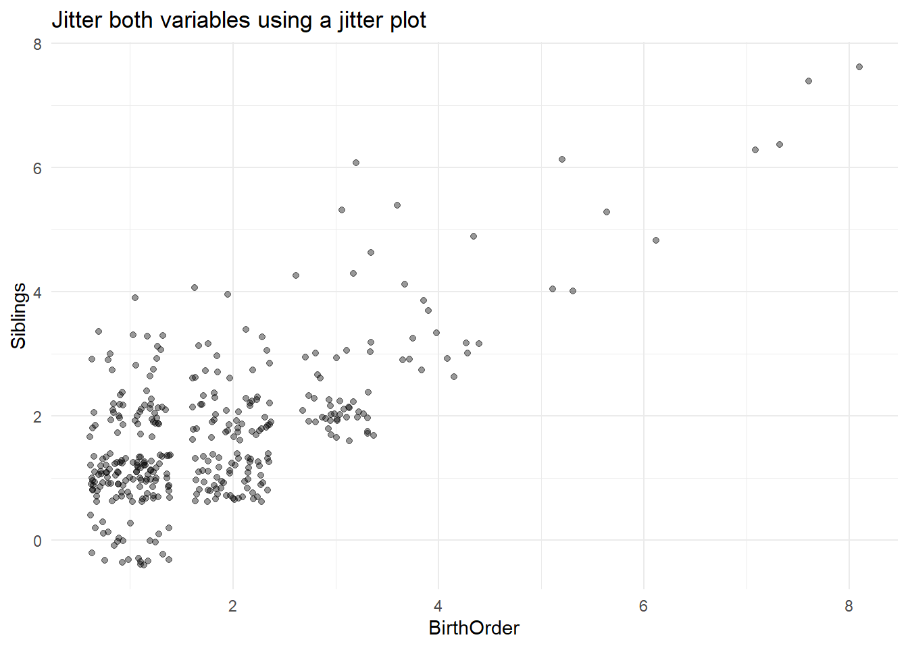
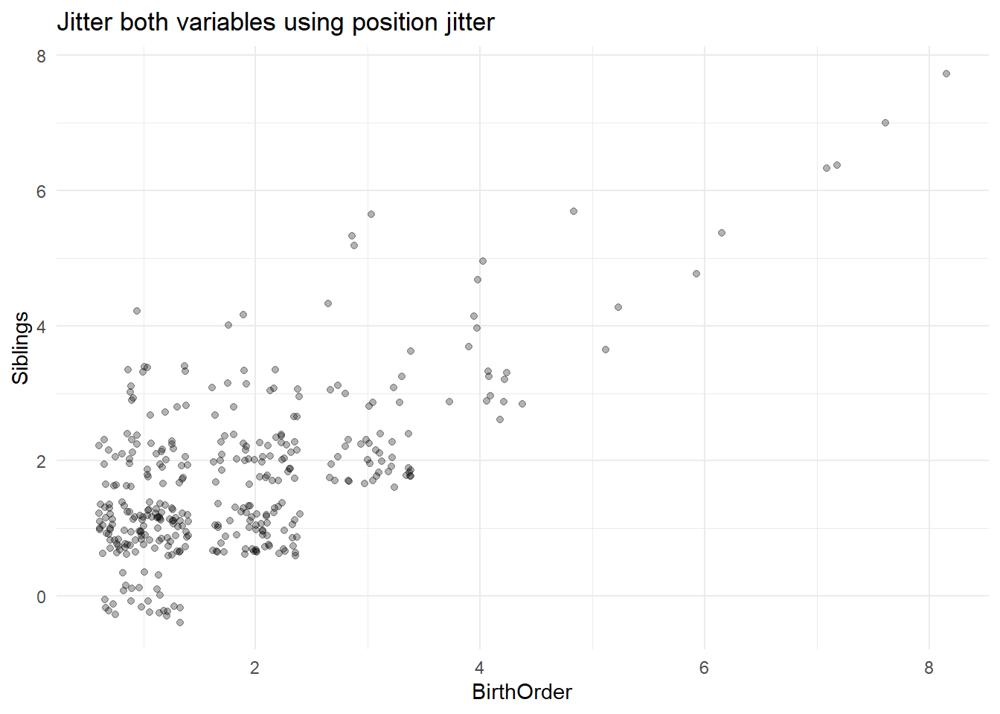
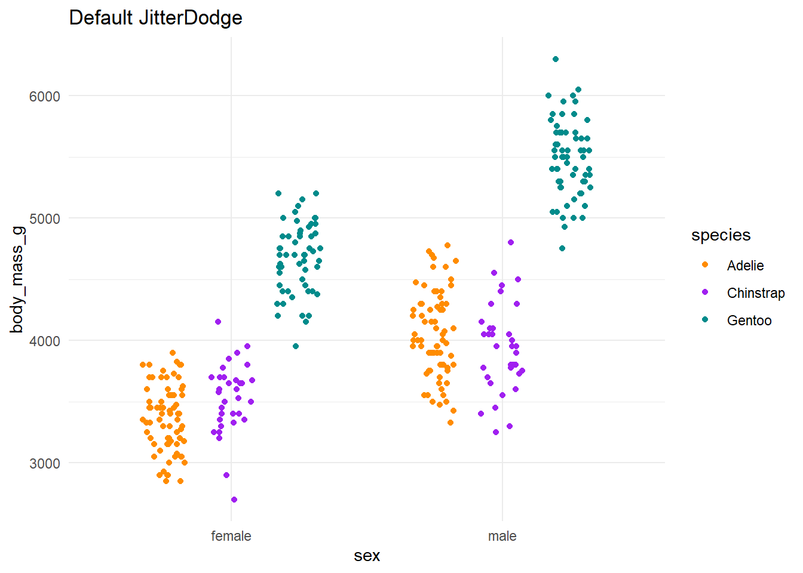
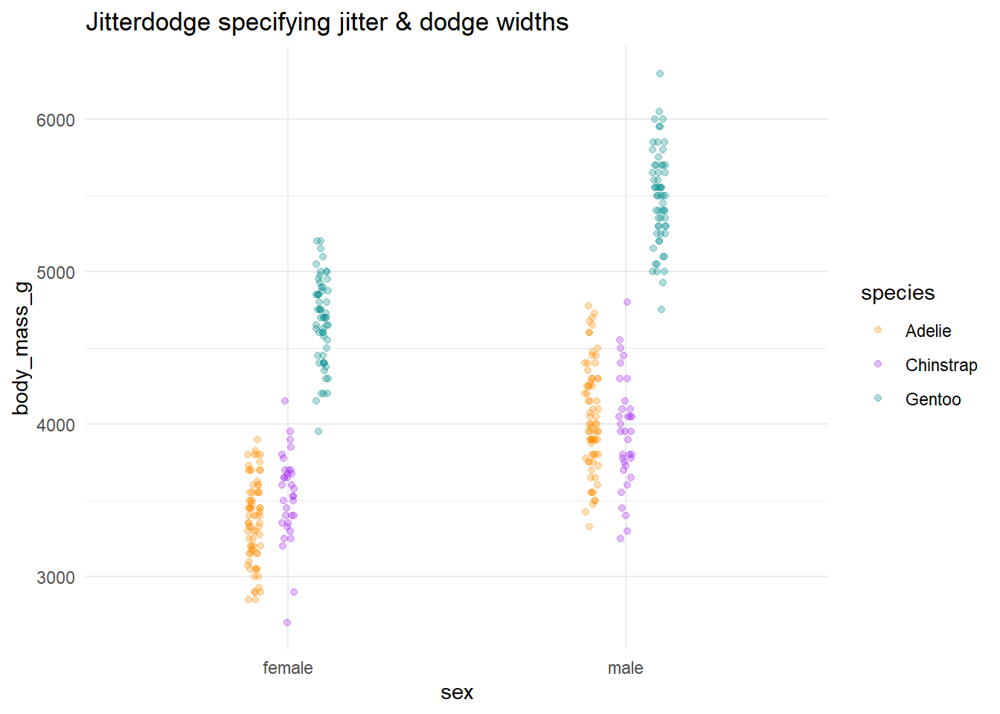
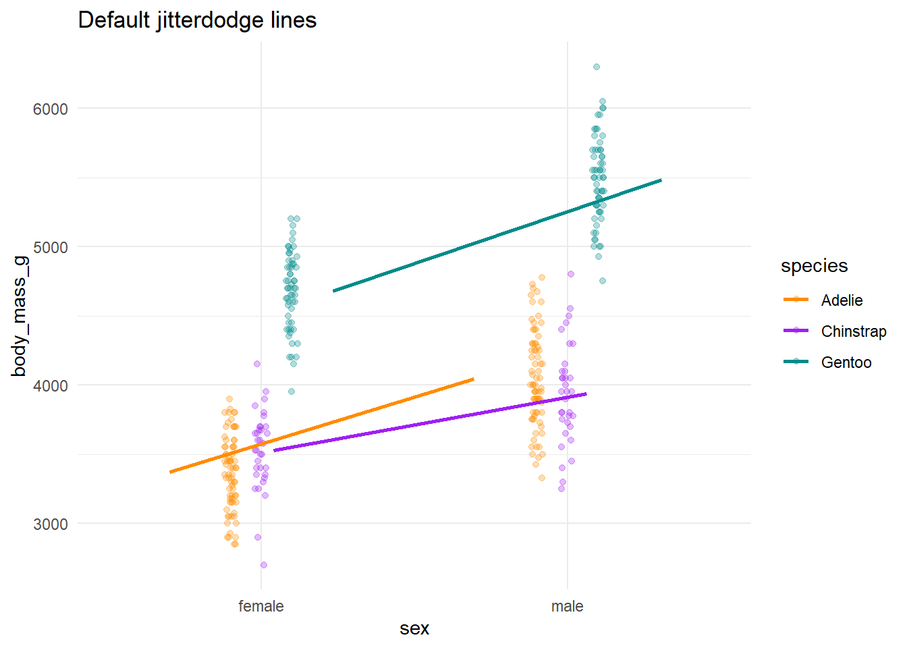

Minor Position Adjustments
To make minor adjustments to position of bars, points, lines, and densities we will specify the “position” in our layers. There are several ways to adjust the position (generally speaking). Some of the most common include:
Identity (not adjusting position)
Dodge (nudge position of categories horizontally from overlapping)
Stack (display bars & densities on top of one another vertically)
Fill (adjust stacked items to be proportional)
Jitter (add noise to overlapping points)
Jitterdodge (add noise to points and nudge groups horizontally)
Nudge (offset text in either x or y direction)
The following chapter in ggplot2 book covers more details about position.
1 Position Identity
Some graphs will automatically adjust the position of elements (e.g. the histograms below automatically stack bars). In case we don’t want the bars stacked, we can specify to keep the position as-is using position = position_identity().
Example: gf_plot( Y ~ X , data = Dataset. position = position_identity() )
gf_histogram(~flipper_length_mm, data = penguins, fill=~island, alpha = 0.5) %>%
gf_refine(scale_fill_manual(values = c("darkorange","purple","cyan4"))) %>%
gf_labs(title = "Default Stacked")gf_histogram(~flipper_length_mm, data = penguins, fill=~island, alpha = 0.5, position = position_identity()) %>%
gf_refine(scale_fill_manual(values = c("darkorange","purple","cyan4"))) %>%
gf_labs(title = "Position Identity")gf_histogram(~flipper_length_mm, data = penguins, fill=~species, alpha = 0.5) %>%
gf_refine(scale_fill_manual(values = c("darkorange","purple","cyan4"))) %>%
gf_labs(title = "Default Stacked")gf_histogram(~flipper_length_mm, data = penguins, fill=~species, alpha = 0.5, position = position_identity()) %>%
gf_refine(scale_fill_manual(values = c("darkorange","purple","cyan4"))) %>%
gf_labs(title = "Position Identity")
2 Dodge Bars
For bargraphs, the default is to stack the categories. If you want to have the bars for each category side-by-side you can dodge the position using position = position_dodge.
Example (original): gf_plot( ~ X , data = Dataset , position = position_dodge())
Example (with specifications): gf_plot( ~ X , data = Dataset , position = position_dodge2(preserve = “single”))
gf_bar(~flight_freq, data = fly, fill = ~rude_to_recline) %>%
gf_refine(scale_fill_brewer(palette = "Blues")) %>%
gf_labs(x = "How often do you fly?", fill = "Rude to\nRecline?", title = "Default Bargraph")gf_bar(~flight_freq, data = fly, fill = ~rude_to_recline, position = position_dodge()) %>%
gf_refine(scale_fill_brewer(palette = "Blues")) %>%
gf_labs(x = "How often do you fly?", fill = "Rude to\nRecline?", title = "Position Dodge")gf_bar(~flight_freq, data = fly, fill = ~rude_to_recline, position = position_dodge2()) %>%
gf_refine(scale_fill_brewer(palette = "Blues")) %>%
gf_labs(x = "How often do you fly?", fill = "Rude to\nRecline?", title = "Position Dodge2", subtitle = "Added Space Between Bars")The default position_dodge will adjust the width of the bars for inconsistent numbers of categories. To keep the width the same, specify preserve = “single”.
gf_bar(~as.factor(cyl), data = mtcars, fill=~as.factor(vs)) %>%
gf_labs(title = "Default Stack", x = "Cylinders", fill = "vs")
gf_bar(~as.factor(cyl), data = mtcars, fill=~as.factor(vs), position = position_dodge()) %>%
gf_labs(title = "Default Position Dodge", x = "Cylinders", fill = "vs")gf_bar(~as.factor(cyl), data = mtcars, fill=~as.factor(vs), position = position_dodge2(preserve = "single")) %>%
gf_labs(title = "Position Dodge2", subtitle = "Preserve Bar Width", x = "Cylinders", fill = "vs")3 Proportion Fill
Instead of just stacking bars & densities on top of one another, it is sometimes helpful to translate the stacks into percentages instead of raw counts. Use position = position_fill() in this case.
Example: gf_plot( ~ X , data = Dataset , position = position_fill())
gf_bar(~flight_freq, data = fly, fill = ~rude_to_recline) %>%
gf_refine(scale_fill_brewer(palette = "Blues")) %>%
gf_labs(x = "How often do you fly?", fill = "Rude to\nRecline?", title = "Default Bargraph") %>%
gf_theme(legend.position = "bottom") gf_bar(~flight_freq, data = fly, fill = ~rude_to_recline, position = position_fill()) %>%
gf_labs(x = "How often do you fly?", fill = "Rude to\nRecline?", title = "Position Fill (Proportions)", y = "Proportion") %>%
gf_refine(scale_fill_brewer(palette = "Blues"))%>%
gf_theme(legend.position = "bottom") gf_bar(~as.factor(cyl), data = mtcars, fill=~as.factor(vs)) %>%
gf_labs(title = "Default Stack", x = "Cylinders", fill = "vs")gf_bar(~as.factor(cyl), data = mtcars, fill=~as.factor(vs), position = position_fill()) %>%
gf_labs(title = "Position Fill", x = "Cylinders", fill = "vs")Position fill can be used with other graphs too. Below are examples of histograms using the default stack and then fill.
gf_histogram(~price, data = diamonds, fill = ~cut) %>%
gf_labs(title = "Default Stacked Histogram")gf_histogram(~price, data = diamonds, fill = ~cut, position = position_fill()) %>%
gf_labs(title = "Proportion Filled Histogram")The following examples of density plots show the overlapping densities (default), stacked densities, and then position filled densities.
gf_density(~price, data = diamonds, fill = ~cut) %>%
gf_labs(title = "Default Overlapping Densities")gf_density(~price, data = diamonds, fill = ~cut, position = position_stack()) %>%
gf_labs(title = "Stacked Densities")gf_density(~price, data = diamonds, fill = ~cut, position = position_fill()) %>%
gf_labs(title = "Proportion Filled Densities")gf_density(~age, data = gss_sm, fill=~marital) %>%
gf_labs(title = "Default Overlapping Densities")gf_density(~age, data = gss_sm, fill=~marital, position = position_stack()) %>%
gf_labs(title = "Stacked Densities")gf_density(~age, data = gss_sm, fill=~marital, position = position_fill()) %>%
gf_labs(title = "Proportion Filled Densities")4 Jitter PointS
When points overlap it is helpful to jitter the position to see the overlapping points. Also, adding transparency is usually helpful. There are a few ways to jitter point positions.
Jitter Specific Variable: gf_plot( Y ~ jitter(X), data = Dataset)
Jitter Plot: gf_jitter( Y ~ X , data = Dataset, width = 0.3, height = 0.2)
Jitter Position: gf_plot( Y ~ X , data = Dataset , position = position_jitter(height = 0, width = 0.2))
gf_point(Siblings~BirthOrder, data = StudentSurvey) %>%
gf_labs(title = "Default Graph Overlapping Points")gf_point(Siblings~jitter(BirthOrder), data = StudentSurvey, alpha = 0.3) %>%
gf_labs(title = "Just Jitter Birth Order", subtitle = "Specifying jitter around variable")gf_point(Siblings~BirthOrder, data = StudentSurvey, alpha = 0.3, position = position_jitter(height = 0, width = 0.2)) %>%
gf_labs(title = "Just Jitter Birth Order", subtitle = "Specifying Position Jitter")gf_jitter(Siblings~BirthOrder, data = StudentSurvey, alpha = 0.4) %>%
gf_labs(title = "Jitter both variables using a jitter plot")
gf_point(Siblings~BirthOrder, data = StudentSurvey, position = position_jitter(), alpha = 0.3) %>%
gf_labs(title = "Jitter both variables using position jitter")
gf_jitter(Siblings~BirthOrder, data = StudentSurvey, alpha = 0.4, width = 0.3, height = 0.2) %>%
gf_labs(title = "Jitter both variables using a jitter plot", subtitle = "Specifying width & height")
gf_point(Siblings~BirthOrder, data = StudentSurvey, position = position_jitter(width = 0.3, height = 0.2), alpha = 0.3) %>%
gf_labs(title = "Jitter both variables using position jitter", subtitle = "Specifying width & height")5 Jitterdoge Points & Lines
If you’d like to both jitter position of points and dodge overlapping categories, use jitterdodge.
Example: gf_plot(Y~X, data = Dataset, position = position_jitterdodge(jitter.width = 0.1, dodge.width = 0.3))
gf_point(body_mass_g~sex, data = penguins, color = ~species)%>%
gf_refine(scale_color_manual(values = c("darkorange","purple","cyan4"))) %>%
gf_labs(title = "Default overlapping points & categories")gf_point(body_mass_g~sex, data = penguins, color = ~species, position = position_jitterdodge()) %>%
gf_refine(scale_color_manual(values = c("darkorange","purple","cyan4"))) %>%
gf_labs(title = "Default JitterDodge")
gf_point(body_mass_g~sex, data = penguins, color = ~species, position = position_jitterdodge(jitter.width = 0.1, dodge.width = 0.3), alpha = 0.3) %>%
gf_refine(scale_color_manual(values = c("darkorange","purple","cyan4"))) %>%
gf_labs(title = "Jitterdodge specifying jitter & dodge widths")
The following examples overlay summary lines on the plot. So the categories & lines match up, it is best to keep the jitterdodge specifications the same throughout all layers.
gf_point(body_mass_g~sex, data = penguins, color = ~species, position = position_jitterdodge(jitter.width = 0.1, dodge.width = 0.3, seed = 123), alpha = 0.3) %>%
gf_refine(scale_color_manual(values = c("darkorange","purple","cyan4"))) %>%
gf_line(body_mass_g~sex, color = ~species, data = penguins, group = ~species, stat = "summary", size = 1) %>%
gf_labs(title = "No jitterdodge on lines")## Warning: Using `size` aesthetic for lines was deprecated in ggplot2 3.4.0.
## ℹ Please use `linewidth` instead.
## This warning is displayed once every 8 hours.
## Call `lifecycle::last_lifecycle_warnings()` to see where this warning was
## generated.## No summary function supplied, defaulting to `mean_se()`gf_point(body_mass_g~sex, data = penguins, color = ~species, position = position_jitterdodge(jitter.width = 0.1, dodge.width = 0.3, seed = 123), alpha = 0.3) %>%
gf_refine(scale_color_manual(values = c("darkorange","purple","cyan4"))) %>%
gf_line(body_mass_g~sex, color = ~species, data = penguins, group = ~species, stat = "summary", size = 1, position = position_jitterdodge()) %>%
gf_labs(title = "Default jitterdodge lines")## No summary function supplied, defaulting to `mean_se()`
gf_point(body_mass_g~sex, data = penguins, color = ~species, position = position_jitterdodge(jitter.width = 0.1, dodge.width = 0.3, seed = 123), alpha = 0.3) %>%
gf_refine(scale_color_manual(values = c("darkorange","purple","cyan4"))) %>%
gf_line(body_mass_g~sex, color = ~species, data = penguins, group = ~species, stat = "summary", size = 1, position = position_jitterdodge(jitter.width = 0.1, dodge.width = 0.3)) %>%
gf_labs(title = "Specify widths in jitterdodge")## No summary function supplied, defaulting to `mean_se()`6 Nudge Text
To adjust text away from elements in your visual, you can use position_nudge.
Example: gf_text( label = ~TextVar , position = position_nudge())
gf_point(Yield~AmmoniumAmount|AmmoniumQuality, data=ammonium2, color = ~ProdUnit, shape = ~ProdUnit) %>%
gf_text(label = ~Block) %>%
gf_labs(x = "Ammonium Amount", title = "Using hjust to nudge labels", shape = "Production\n Unit", color = "Production\n Unit") %>%
gf_labs(title = "Default Overlapping Labels")gf_point(Yield~AmmoniumAmount|AmmoniumQuality, data=ammonium2, color = ~ProdUnit, shape = ~ProdUnit) %>%
gf_text(label = ~Block, position = position_nudge(x = -0.1)) %>%
gf_labs(x = "Ammonium Amount", title = "Using hjust to nudge labels", shape = "Production\n Unit", color = "Production\n Unit") %>%
gf_labs(title = "Nudge labels -0.1")gf_point(Yield~AmmoniumAmount|AmmoniumQuality, data=ammonium2, color = ~ProdUnit, shape = ~ProdUnit) %>%
gf_text(label = ~Block, position = position_nudge(x = 0.1)) %>%
gf_labs(x = "Ammonium Amount", title = "Using hjust to nudge labels", shape = "Production\n Unit", color = "Production\n Unit") %>%
gf_labs(title = "Nudge labels 0.1")gf_point(Yield~AmmoniumAmount|AmmoniumQuality, data=ammonium2, color = ~ProdUnit, shape = ~ProdUnit) %>%
gf_text(label = ~Block, hjust = 2) %>%
gf_labs(x = "Ammonium Amount", title = "Using hjust to nudge labels", shape = "Production\n Unit", color = "Production\n Unit") %>%
gf_labs(title = "Nudge labels Using hjust instead")To adjust halfway, use vjust = 0.5 or hjust = 0.5
Example: gf_text( , position = position_stack(vjust = 0.5))
gf_col(Treatment~PercentPatients, data=clinical, fill=~Response) %>%
gf_refine(scale_fill_brewer(palette = "RdYlGn", direction = -1)) %>%
gf_text(Treatment~PercentPatients, label=~round(PercentPatients, digits = 0), position = position_stack()) %>%
gf_labs(x = "Cumulative Percentage of Patients", title = "Add labels using position_stack")gf_col(Treatment~PercentPatients, data=clinical, fill=~Response) %>%
gf_refine(scale_fill_brewer(palette = "RdYlGn", direction = -1)) %>%
gf_text(Treatment~PercentPatients, label=~round(PercentPatients, digits = 0), position = position_stack(vjust = 0.5)) %>%
gf_labs(x = "Cumulative Percentage of Patients", title = "Adjust labels using position_stack & vjust")